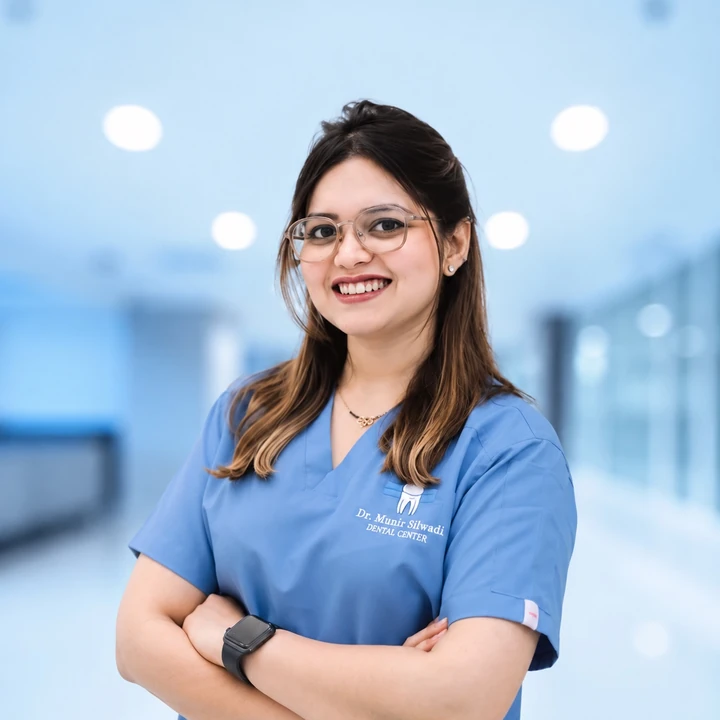

First visit & checkups
Early visits can help establish preventive habits and allow developing teeth to be assessed over time.
Children's dental care
Age-appropriate dental care for children, from preventive visits and fillings to pulp therapy, dental injuries and support for children who may feel anxious about treatment.
When to visit
Some visits are preventive. Others start with pain, a cavity, an injury or a concern about how the teeth are developing.
Early visits can help establish preventive habits and allow developing teeth to be assessed over time.
Pain with eating, temperature sensitivity or discomfort that keeps returning should be assessed.
Visible decay, a chipped tooth or a lost restoration may need restorative treatment after examination.
A bumped, loose, chipped or displaced tooth should be assessed promptly so the appropriate next step can be planned.
Early loss of a baby tooth, thumb sucking or concerns about eruption can be reviewed as the child grows.
A pediatric specialist can adapt communication and behavior guidance to the individual child and appointment.
Pediatric treatments
Treatment is selected after assessment and may vary according to the tooth, age, symptoms and clinical findings.
Dental examinations, preventive guidance, fluoride treatment and fissure sealants where clinically appropriate.
Restorative treatment for damaged or decayed primary and permanent teeth, based on the extent of the problem and the tooth's prognosis.
Pulpotomy or pulpectomy may be considered when decay or injury affects the pulp of a primary tooth and the tooth is suitable for treatment.
Assessment and management planning for chipped, loosened, displaced or otherwise injured teeth.
Assessment after early tooth loss, space maintainers when indicated, interceptive appliances and oral-habit counselling.
Behavioral guidance and, where clinically appropriate after assessment, nitrous oxide conscious sedation as part of an individualized care plan.
Not every child needs every treatment shown here. The dentist will explain the findings and discuss suitable options before treatment is planned.
What to expect
The appointment starts with understanding your child's history and concerns, then moves at a pace appropriate for the clinical situation.
We review symptoms, dental history, medical information and any concerns from the parent or caregiver.
The dentist checks the teeth, gums, bite and developing dentition. X-rays are considered only when clinically indicated.
Findings and suitable options are explained in clear language, with time for questions.
Preventive advice, treatment or follow-up is planned around the child's individual needs.

Specialist Pediatric Dentist
Dr. Kashmira Pawar Jayprakash has over nine years of clinical experience in pediatric dentistry. Her clinical focus includes preventive and restorative care, pulp therapy, dental trauma, behavioral guidance and individualized care for children who may require additional support during treatment.
Parent questions
Short answers to common questions before a child's dental visit.
A first dental visit is generally recommended by the first birthday, or earlier if there is pain, trauma, visible decay or another concern. Early visits are mainly about prevention, development and helping families establish healthy routines.
Yes. Primary teeth support chewing, speech and space for the developing permanent teeth. Whether a tooth needs monitoring, restoration, pulp therapy or extraction depends on the clinical findings and prognosis.
Pediatric dental care can include age-appropriate communication and behavioral guidance. Dr. Kashmira also has training in nitrous oxide conscious sedation, which may be considered only when clinically appropriate after assessment.
The dentist assesses the tooth, symptoms and remaining tooth structure. Depending on the findings, options may include pulp therapy such as pulpotomy or pulpectomy, or another treatment if the tooth is not suitable for preservation.
No. Dental X-rays are considered when they are clinically indicated and when the information is expected to help diagnosis or treatment planning.
Contact a dental professional promptly, especially if a tooth is loose, displaced, broken or causing significant pain. The urgency and treatment depend on the type of injury and whether a primary or permanent tooth is involved.
Contact reception to request a pediatric dentistry appointment at our Al Raha Mall location. The team can confirm availability and help route your enquiry.